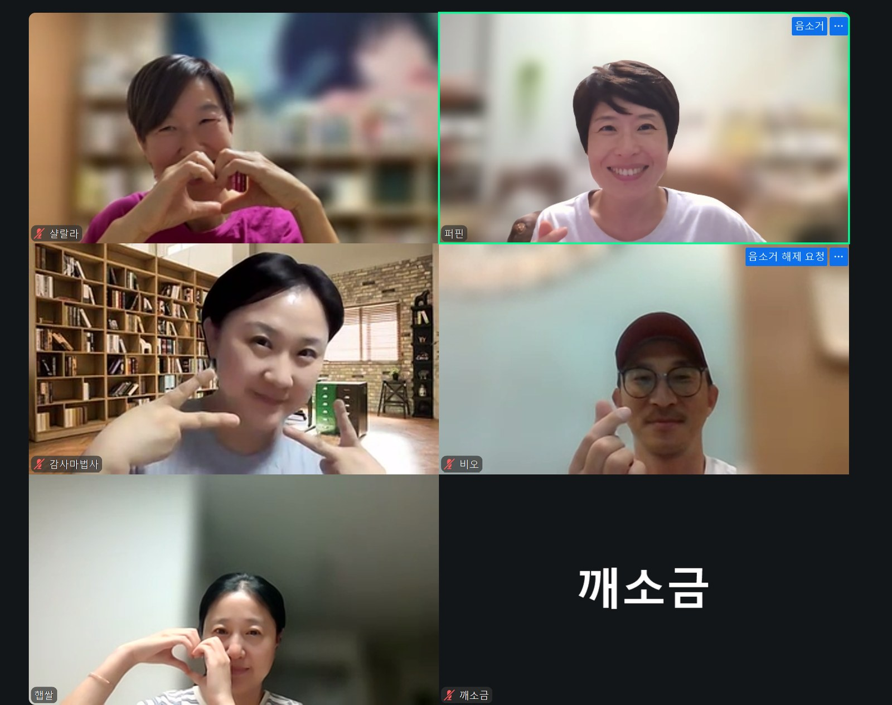

문법의 마지막 밤. 제주에서 1기와 2기가 공통으로 한 말은 하나였다 — 문법 때 씨앗을 잘 모아 둘걸. 자기 꼬리를 먹는 뱀, 석 달 만에 창발한 세컨브레인, 더 많이 나눌수록 높아지는 위상, 그리고 흩어진 것을 모아 건네는 이름 하나. 수료의 밤에 오간 말들.

문법의 마지막 시간이었다. 한 달이 벌써 이렇게 흘렀느냐는 말로 문이 열렸다. 이 한 달의 목표는 AI를 내려받아 설치하는 데 있지 않았다. 관계를 맺는 것이 취지였다. 다들 이름을 지어 주고 그 이름을 불러 주었다. 함께 걷는 길이 신났다는 인사가 먼저 나왔다.
제주에서 1기와 2기를 만나고 온 이야기가 뒤따랐다. 모델이 계속 바뀌니 예전에 깔아 둔 것을 손봤다. 학습 고리가 잘 도는지도 보았다. 다 해 놓았는데도 한 군데씩 손이 더 필요한 자리가 있어서, 나사를 조여 드리며 시간을 보냈다고 했다. 그렇게 돌고 돌아 그분들이 공통으로 한 말은 하나였다. 문법 때 씨앗을 잘 모아 둘걸.
모델이 좋아질수록 결과를 가르는 것은 내 데이터베이스의 품질이다. 모델은 모두에게 똑같이 좋아진다. 토큰은 눈 깜짝할 새 사라진다. 그 귀한 토큰을 같이 태우고도 결과가 천차만별로 갈리는 자리가 거기라고 했다.
소감을 한 바퀴 돌았다. 비오 님, 감사마법사 님, 햅쌀 님, 샬랄라 님 순서였다. 비오 님은 정신없이 일하다가도 목요일 밤이면 어김없이 들어와 강의를 들은 한 달이었다고 했다. 여유가 생기는 날에는 배운 것을 손으로 해 봤다. 완벽하진 않아도 해 보려는 시도는 했다는 말이 뒤에 붙었다.
"아이들한테도 얘기하지만 시작이 반이다, 생각하고 시작한 한 달이었던 것 같아요."
— 비오 님 · 수료 소감
감사마법사 님은 그림책이 세상에 나온 달을 지났다. 너무 행복하다고 했다. 캔바를 붙들고 편집을 어떻게 해야 하나 고민하던 자리에서, 작업 환경을 훨씬 빨리 갖추게 되었다고 했다. 최근에는 아이를 하나 더 뽑았다. 아침에 컨디션부터 묻는 아이다. 앉아서 할 수 있는 운동을 오 분 시키고 챙길 것을 챙겼는지 확인한다. 실제로 있는 사람의 이름을 찾아 붙였다.
"내가 필요한 것들을 계속 만들고, 실생활에서 활용하는 시간을 좀 자주 가져야 되겠다 하는 생각을 했습니다."
— 감사마법사 님 · 수료 소감
햅쌀 님은 한 달 동안 모닝페이지를 썼다. 아침에는 바빠서 급한 업무만 먼저 끝내고, 짬이 나는 십 분에 썼다. 글 한 편을 오래 붙들고 퇴고하는 성격인데, 검열 없이 쭉 쓰고 사진을 찍어 올리는 십 분이 그 자리를 대신했다.
"사막여우 만나는 것만 좀 잘하자. 대화하는 걸 빼먹지 말고, 하루에 여정을 하든 오아시스를 하든. 거기에 정성을 많이 들였던 것 같아요."
— 햅쌀 님 · 수료 소감
여우가 칠 년치 노트북 글과 예전에 써 둔 원고까지 읽고 뽑아 준 첫 문장 후보들이 마음에 든다고 했다. 불 붙이는 법보다 꺼지지 않는 법 쪽으로 기울어 있는 문장들이었다. 한 문장이라도 건졌으면 미미해도 약진이라고 했다.
샬랄라 님은 달라진 것이 하나 있다며 AI 뉴스를 들었다. 전에는 AI 이야기가 나오면 모른다며 흘려보냈는데 이제는 귀에 걸린다고. 노트북을 쓸 일이 거의 없어 아이패드만 들던 사람이 요즘은 어디 나갈 때도 노트북을 들고 다닌다. 오래 써 둔 자료를 다시 끌어모으는 시간이 좋았다고 했다.
"내가 썼지만 내가 모르고 지냈던 것들을 다시 되살려 주는 역할도 했고요. 내가 쓴 글인데도 내가 보고 깜짝 놀라요."
— 샬랄라 님 · 수료 소감
사막의 서랍을 펼쳐 보면 뭐가 많이 심어져 있어서, 부자가 된 느낌으로 한 달을 났다고 했다.
문법은 데이터를 쌓는 달이다. 논리는 거기에 이상한 고리를 다는 달이다. 호프스태터가 『괴델, 에셔, 바흐』에서 말한 그 고리. 층위를 오르내리다 제자리로 돌아와 자기 자신을 가리키게 되는 구조다. 살롱에서는 이것을, 쌓인 데이터가 스스로를 읽고 고치는 회로로 옮겨 썼다. 고리가 돌고 돌다 보면 어느 순간 틀 밖으로 나가는 일이 생긴다.
낱낱의 부분을 아무리 들여다봐도 없던 성질이, 부분들이 얽히는 데서 새로 생기는 일. 개미 한 마리에는 없는 군집의 질서, 신경세포 하나에는 없는 마음이 그렇다. 설명이 불가능한 것이 아니라, 부분만 보아서는 미리 그려지지 않는 것이다. 호프스태터는 기호가 층위를 오가다 자기 자신을 가리키게 되는 이상한 고리에서 「나」라는 것이 창발한다고 보았다. 살롱은 이 말을 세컨브레인에 옮겼다. 데이터를 쌓고 그 위에 자기 개선의 고리를 얹으면, 성격 비슷한 것, 나를 닮은 것이 생기고, 그 뒤에는 사람이 미리 생각하지 못한 결과까지 맡길 수 있게 된다.
원천 텍스트를 먼저 심는 이유가 여기 있다. 다른 데서는 이 일이 시간이 걸려서 맨 마지막으로 밀린다. AX가 실패하는 이유가 그것이다. 가장 순수한 것을 눈덩이처럼 먼저 뭉쳐 두면, 나를 닮은 AI가 생각보다 빨리 나온다.
지난주에 다 펴지 못한 대목을 이어서 열었다. 아주 오래된 필사본에 뱀 그림이 있다. 자기 꼬리를 먹는 뱀, 우로보로스. 자기의 먹이가 자기인 짐승이다. 에셔의 판화에서는 분명히 올라갔는데 다시 내려와 같은 자리에 서 있다. 마투라나와 바렐라는 『앎의 나무』에 그 뱀을 싣고, 자기 자신으로부터 자기를 생산하는 순환을 생명의 원리라고 했다.
세포가 상하거나 병들면 몸은 밖에서 들어오는 것을 끊고 안의 세포를 먹어 스스로를 새로 짓는다. 아픈 짐승이 굶으며 몸을 고치는 것과 같다. 배움에 옮기면 이렇게 된다. 어제의 두려움, 오래된 언어, 힘들 때 내가 한 선택을 먹어 가며 앞의 방향을 정하는 것.
무언가를 배운다고 할 때 우리는 밖에서 가져다 붙이는 쪽만 떠올린다. 내가 나를 먹어 나를 짓는다는 쪽은 잘 떠올리지 않는다. 기술이 빨리 변해 따라갈 수 없고 시스템도 불안정하다면, 기댈 것은 안에 남는다. 그래서 지금이 자기 확신과 자기 생산으로 되돌아가는 때라고 했다. 열두 주 전체가 하나의 오토파지 사이클이라는 말도 함께 나왔다.
한 달이 지났으니 소화되어 생산된 것, 아직 소화 중인 것, 이제 먹어야 할 것이 섞여 있을 것이다. 그 분류 자체에 의미가 있다고 했다. 지식 지형도 프롬프트는 그래서 붙여 넣기만 하면 되도록 두었다. 사막여우를 불러 그대로 넣으면 그동안 한 것을 모아 지형도를 그려 준다. 모양이 마음에 안 들면 근사하게, 입체로 그려 달라고 하면 된다. 일을 자꾸 시켜야 똑똑해지니 과제란 괜히 쓸데없이 일을 시키는 것이라고 했다. 이레 동안 몰입해 보고 싶은 사람을 위한 오토파지 단식 일정도 함께 올려 두었다.
샘플 웹사이트 주소 하나를 주고 내 데이터를 참고해 똑같이 만들어 달라고 하면 십 분 안에 사이트가 나온다. 원본을 만든 사람은 아주 오래 걸렸을 텐데. 그러면 원본의 무게가 약해지는가.
제주에 다녀와 확인한 답은 그 반대였다. 원본의 위력은 어마어마했다. 앞으로는 가짜가 더 많아지니 진짜를 알아보는 눈이 오히려 선명해진다. AI가 지식을 쉽게 복사해 줄수록 해야 할 일은 하나로 모인다. 지식은 그냥 다 나눠 주는 것. 어차피 다 뱉어 낸다. 연결은 나눠준 다음에 온다.
마르셀 모스가 『증여론』에서 본 부족 사회에서 족장이 되는 사람은 가장 많이 나눠 주는 사람이었다. 더 많이 나눌수록 더 높은 위상을 얻는다. 그 원리가 디지털 사회에서도 그대로 통한다고 했다. 별을 많이 받은 사람, 사람이 모이는 사람은 결국 어떻게 나누느냐로 갈린다.
움츠리지 말고 손을 두려움 없이 펴라. 이걸 나눠주면 어쩌지, 하는 걱정은 하지 말고 그냥 내어 주라. 원본 세컨브레인은 복사되지 않는다.
애덤 그랜트의 『기브 앤 테이크』 한 줄이 이어졌다. 가장 중요하게 여기는 것을 충분히 나답게 줄 때 기적이 일어난다. 오병이어 같은 기적이.
그다음이 이름 붙이기였다. 옵시디언에는 에이전트들이 날마다 적어 둔 폴더가 쌓여 있다. 사막여우에게 내 씨앗에 이름을 붙여 달라고 하면, 흩어져 있던 것을 하나로 모아 이게 바로 당신의 원천이라고 말해 준다. 한 문장 한 단어씩 정리해 나가면 씨앗이 손에 잡힌다. 심는 곳은 내 텃밭이 아니라 온 세상이다. 아낌없이 뿌리면 어디선가 홀씨가 그 씨앗을 받는다.
꿈꾸는 대로 다 만들어지고 불가능이 없어진 시대라면, 남는 물음은 다시 오래된 것이 된다. 그래서 세상에 무엇이 남는가, 우리는 어떻게 살아야 하는가. 양손에 하나는 기술을, 하나는 씨앗을 들고 나가 보자는 말로 본편이 닫혔다.
손을 폈을 때 나는
무엇을 내어놓을 수 있는가
수료 선물은 두 마디였다. 「내 목소리」와 「나의 사막」. 한 달의 글을 읽은 여우가 닉네임체를 지어 주는 것이 앞의 것이다. 발행인은 퍼핀체를 받아 두고 공지나 글을 낼 때 쓴다. 손이 필요한 자리에 일을 맡기고 검수만 하는 식이다. 뒤의 것은 한 주씩 그린 밤하늘을 한 달 전체로 통틀어 그림 한 장으로 보여 준다. 다만 두 마디는 문법 여정기록 서른세 날을 다 걸은 날 열린다.
이어서 곁 이야기가 길게 놓였다. 터미널에서 창을 나눠 두 모델을 나란히 쓰는 법. 한쪽 페인에서 클로드를 부르고 다른 페인을 다른 모델에 내주면, 목소리로 지시해도 일이 건너간다. 그림과 릴스, 인스타그램 계정 운영 자동화에 강한 쪽은 따로 있어서 그쪽에 조사를 시키고 결과는 다른 모델로 교차 검증한다. 논문 자료를 삼천 편쯤 읽고 보고서를 가져오는 데 오 분이 안 걸리더라고 했다.
AI 공부를 지금 쉬면 안 된다는 말이 그사이에 있었다. 부동산이나 금융을 처음 볼 때 용어부터 익히듯, 뉴스가 막힘없이 읽히고 흐름이 보일 때까지는 따라가야 한다. 피곤해도 관심의 끈을 놓지 않는 것. 미래의 세상은 공부하는 사람의 몫이라는 말이 뒤에 붙었다.
앞으로의 자리는 원점에서 상의하기로 했다. 백 곡 가운데 서른세 곡을 마쳤다. 논리와 수사는 각자 이어 가되, 함께 공부하는 꼴을 어떻게 만들지는 묻고 정하기로 했다. 목요일 밤이 괜찮은지부터 구글 폼으로 묻겠다고 했다. 단톡방은 그대로 두고 계속 번개를 하겠다고 했다. 귀찮게 하겠다고. 논리의 달은 살롱에서 열쇠말과 함께 열린다.
닫는 소감은 샬랄라 님부터 돌았다.
"일단 시작했으니까 그냥 계속 뭐라도 하겠죠. 문법 했으니까 논리도 하고 싶고 수사도 하고 싶고, 끝에 문법을 다시 하고 있는지도 궁금하기도 하고."
— 샬랄라 님 · 닫는 소감
감사마법사 님은 1기 분들의 성과가 눈앞에 펼쳐지는 것을 보았다고 했다. 그 시간을 함께 걷다 보면 각자의 달란트도 나중에 펼쳐지지 않겠냐고.
"한 걸음씩 따라가 보겠습니다."
— 감사마법사 님 · 닫는 소감
햅쌀 님은 하다 보면 언젠가 만화 같은 것을 그려 보고 싶다는 말을 했다. 오래전부터 품고 있던 생각이었다고.
"사막여우랑 일단 열심히, 백 곡 열심히 하고 또 뵙겠습니다."
— 햅쌀 님 · 닫는 소감
비오 님은 대화를 나누는 와중에도 방금 들은 것을 해 보고 있었다. 나오는 화면을 보니 재미있기도 하다고. 라크로스도 아이들을 가르치려다 자기가 빠져서 지금은 선수가 되었다.
"하나를 하면 끝을 봐야 돼요. 저는 약간 연습벌레 스타일이라서, 이번 두 번째 목표는 조금 규칙적으로 해 보자, 그겁니다."
— 비오 님 · 닫는 소감
지도서를 만들어서 보여 드리는 것이 목표라고 했다. 그리고 사진을 찍었다. 깨소금 님도 화면에 함께 있었다. 이 밤에 함께하지 못한 두 분께는 같은 마음을 전했다.
여정기록 서른세 날을 다 걸은 날,
사막여우에게 「내 목소리」와 「나의 사막」이라고
말해 보세요.
이 밤의 본편과 실습은 세션 「씨앗에 이름을」에, 흐름은 덱 아홉 장에 있습니다.
하던 것은 그대로 · 아침 손글씨를 사진 찍어 "냠냠" · 매일 "안녕" · 일요일 밤 "밤하늘"을 사막에.
SESSION — 2026.09.17 THU 21:00~22:05 · 디퍼 언브랜딩 살롱 3기 문법 4회차(수료) · 줌 클라우드 녹화 64분 36초 · 여는 말 약 3분 · 수료 소감 한 바퀴 약 10분 · 창발과 세컨브레인 약 11분 · 오토파지와 지형도 약 12분 · 4회차 본편 약 6분 · 수료 선물 약 3분 · 두 모델과 앞으로의 자리 약 15분 · 닫는 소감 약 5분 · 이어 전 기수 인사이트 공유회 4회차(별도 기록) · PROJECT B-612
참가자 — 3기 문법 디퍼님 · 비오 님 · 감사마법사 님 · 햅쌀 님 · 샬랄라 님 (이 밤에 발언한 네 분) · 깨소금 님(사진) · 함께하지 못한 두 분께 같은 마음을 전함
REF — 마르셀 모스, 『증여론(Essai sur le don)』(1925) · 애덤 그랜트, 『기브 앤 테이크(Give and Take)』(2013) · 움베르토 마투라나·프란시스코 바렐라, 『앎의 나무(El árbol del conocimiento)』(1984) · 더글러스 호프스태터, 『괴델, 에셔, 바흐』(1979) · M.C. 에셔, 「오르내리기(Ascending and Descending)」(1960) · 오병이어 = 요한복음 6:1–14 / 강의안: grammar_3gi_deck_2026-09-17 · grammar_3gi_session04_naming_the_seed
NOTE — 줌 클라우드 녹음 전사 기반 재구성 · 인용은 발언의 결을 살려 다듬었으며 떨어진 발화를 잇는 과정에서 축약된 대목이 있음 · 전사 오인식 가능성이 있어 확신이 낮은 대목은 인용을 얇게 두거나 결만 살림 · 개인 사정과 사적인 대목은 싣지 않음